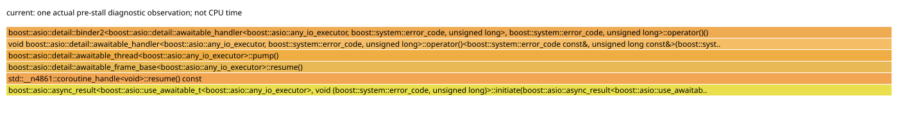
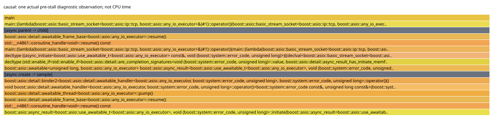

coroPerf
coroPerfAsio #1720: terminal write error poisons epoll progress
The local failure mechanism is verified by CoroPerf lifetime attribution, explicit reactor observations, and 30 executions across ten configurations. A two-condition local repair restores both coroutine and callback reproducers.
Upstream issue · Measured evidence · 2026-11-28T12:55:27+00:00
Root cause
A failed stream send returns EPIPE with zero bytes. reactive_socket_send_op_base treats zero bytes as a short successful send and returns done_and_exhausted. That clears try_speculative_. Once EPOLLOUT is registered on the edge-triggered descriptor, the next write is queued without a send attempt or registration change, and remains pending until timeout cleanup.
- EPIPE plus bytes=0 returns status2 (done_and_exhausted), although the operation has a terminal error.
- The reactor sets try_speculative=false; a later write registers EPOLLOUT and is completed with the same error.
- The fifth operation sees try_speculative=false and EPOLLOUT already set. It stays in the write queue without perform or another readiness event until cleanup.
- Restricting exhaustion classification to successful sends removes the stale state and restores all ten error-path attempts.
Local repair: require !o->ec_ before classifying either single-buffer or buffer-sequence sends as done_and_exhausted. Each repaired error-path variant finishes ten attempts in all three runs; healthy writes finish with and without the patch. Upstream acceptance and release integration are unverified.
Unchanged reproducer and controls
Unchanged November26 upstream standalone coroutine and callback attachments; Boost1.88.0 official source archive, Linux/GCC11.4. Original O2 builds and separate O0 debugger builds are recorded. Healthy and buffer-sequence controls are explicit adaptations; the original GoogleTest fixture and Ubuntu24.04/GCC13.3 environment were not reproduced.
Boost 1.88.0 · g++ (Ubuntu 11.4.0-1ubuntu1~22.04.3) 11.4.0
| Variant | Runs | Result |
|---|---|---|
| coroutine | 3 | Timeout · 3/3 |
| callback | 3 | Timeout · 3/3 |
| no-epoll | 3 | Complete · 3/3 |
| handler-tracking | 3 | Timeout · 3/3 |
| repaired-coroutine | 3 | Complete · 3/3 |
| repaired-callback | 3 | Complete · 3/3 |
| healthy | 3 | Complete · 3/3 |
| repaired-healthy | 3 | Complete · 3/3 |
| multi-buffer | 3 | Timeout · 3/3 |
| repaired-multi-buffer | 3 | Complete · 3/3 |
The three-second timeout belongs to the upstream standalone attachment. Cleanup can print operation_aborted and another Try line after the wait has already failed; these are not additional pre-timeout completions.
What CoroPerf adds
CoroPerf binary-selected probes and its existing instance graph separate repeated lifetimes at one coroutine-frame address and reconnect them to the writer. Optional activation intervals supply parent evidence missing from instruction-only creation unwinding. An extra Asio do_init frame-to-handle observer joins each write operation to the correct live generation; reactor events then distinguish a queued operation from a completed operation lacking a resume.
| Write operation generation | Coroutine generation | Creator |
|---|---|---|
| 0x5555555c0560#1 | 0x7ffff0001c30 | 0x5555555c06b0 |
| 0x5555555c0560#2 | 0x7ffff0001c30#2 | 0x5555555c06b0 |
| 0x5555555c0560#3 | 0x7ffff0001c30#3 | 0x5555555c06b0 |
| 0x5555555c0560#4 | 0x7ffff0001c30#4 | 0x5555555c06b0 |
| 0x5555555c0560#5 | 0x7ffff0001c30#5 | 0x5555555c06b0 |
Eight creations and eight destructions were captured. Six child lifetimes reused one address; the fifth issued the stalled write and the sixth arose during cleanup. With activation intervals, six creation edges link to the writer; instruction-only creation unwinding leaves those six parents unknown. This capture accepts 165/196. This is an admission count, not independently scored recall or precision.
Without and with retained history
Both flame views use the same one actual observation of the fifth child just before write initiation. Width counts one diagnostic observation, not CPU time. Each segment shows at most six physical frames; creation history adds typed boundaries.
Without CoroPerf · With CoroPerf




Raw physical stack at write initiation
boost::asio::detail::epoll_reactor::start_op
boost::asio::detail::reactive_socket_service_base::do_start_op
boost::asio::detail::reactive_socket_service_base::start_op<boost::asio::detail::reactive_socket_send_op<boost::asio::const_buffer, boost::asio::detail::awaitable_handler<boost::asio::any_io_executor, boost::system::error_code, unsigned long>, boost::asio::any_io_executor> >
boost::asio::detail::reactive_socket_service_base::async_send<boost::asio::const_buffer, boost::asio::detail::awaitable_handler<boost::asio::any_io_executor, boost::system::error_code, unsigned long>, boost::asio::any_io_executor>
boost::asio::basic_stream_socket<boost::asio::ip::tcp, boost::asio::any_io_executor>::initiate_async_send::operator()<boost::asio::detail::awaitable_handler<boost::asio::any_io_executor, boost::system::error_code, unsigned long>, boost::asio::const_buffer>
boost::asio::async_result<boost::asio::use_awaitable_t<boost::asio::any_io_executor>, void (boost::system::error_code, unsigned long)>::do_init<boost::asio::basic_stream_socket<boost::asio::ip::tcp, boost::asio::any_io_executor>::initiate_async_send, boost::asio::const_buffer, int>(boost::asio::detail::awaitable_frame_base<boost::asio::any_io_executor>*, boost::asio::basic_stream_socket<boost::asio::ip::tcp, boost::asio::any_io_executor>::initiate_async_send&, boost::asio::use_awaitable_t<boost::asio::any_io_executor>, boost::asio::const_buffer&, int&)
boost::asio::async_result<boost::asio::use_awaitable_t<boost::asio::any_io_executor>, void (boost::system::error_code, unsigned long)>::initiate<boost::asio::basic_stream_socket<boost::asio::ip::tcp, boost::asio::any_io_executor>::initiate_async_send, boost::asio::const_buffer, int>(boost::asio::basic_stream_socket<boost::asio::ip::tcp, boost::asio::any_io_executor>::initiate_async_send, boost::asio::use_awaitable_t<boost::asio::any_io_executor>, boost::asio::const_buffer, int)::{lambda(auto:1*)#1}::operator()<boost::asio::detail::awaitable_frame_base<boost::asio::any_io_executor> >(boost::asio::detail::awaitable_frame_base<boost::asio::any_io_executor>*) const
boost::asio::detail::awaitable_frame_base<boost::asio::any_io_executor>::await_transform<boost::asio::async_result<boost::asio::use_awaitable_t<boost::asio::any_io_executor>, void (boost::system::error_code, unsigned long)>::initiate<boost::asio::basic_stream_socket<boost::asio::ip::tcp, boost::asio::any_io_executor>::initiate_async_send, boost::asio::const_buffer, int>(boost::asio::basic_stream_socket<boost::asio::ip::tcp, boost::asio::any_io_executor>::initiate_async_send, boost::asio::use_awaitable_t<boost::asio::any_io_executor>, boost::asio::const_buffer, int)::{lambda(auto:1*)#1}>(boost::asio::async_result<boost::asio::use_awaitable_t<boost::asio::any_io_executor>, void (boost::system::error_code, unsigned long)>::initiate<boost::asio::basic_stream_socket<boost::asio::ip::tcp, boost::asio::any_io_executor>::initiate_async_send, boost::asio::const_buffer, int>(boost::asio::basic_stream_socket<boost::asio::ip::tcp, boost::asio::any_io_executor>::initiate_async_send, boost::asio::use_awaitable_t<boost::asio::any_io_executor>, boost::asio::const_buffer, int)::{lambda(auto:1*)#1}, std::enable_if<std::is_convertible<boost::asio::result_of<boost::asio::async_result<boost::asio::use_awaitable_t<boost::asio::any_io_executor>, void (boost::system::error_code, unsigned long)>::initiate<boost::asio::basic_stream_socket<boost::asio::ip::tcp, boost::asio::any_io_executor>::initiate_async_send, boost::asio::const_buffer, int>(boost::asio::basic_stream_socket<boost::asio::ip::tcp, boost::asio::any_io_executor>::initiate_async_send, boost::asio::use_awaitable_t<boost::asio::any_io_executor>, boost::asio::const_buffer, int)::{lambda(auto:1*)#1} (boost::asio::detail::awaitable_frame_base<boost::asio::any_io_executor>*)>::type, boost::asio::detail::awaitable_thread<boost::asio::any_io_executor>*>::value, void>::type*)::result::await_suspend(std::__n4861::coroutine_handle<void>)::{lambda(void*)#1}::operator()(void*) const
boost::asio::detail::awaitable_frame_base<boost::asio::any_io_executor>::await_transform<boost::asio::async_result<boost::asio::use_awaitable_t<boost::asio::any_io_executor>, void (boost::system::error_code, unsigned long)>::initiate<boost::asio::basic_stream_socket<boost::asio::ip::tcp, boost::asio::any_io_executor>::initiate_async_send, boost::asio::const_buffer, int>(boost::asio::basic_stream_socket<boost::asio::ip::tcp, boost::asio::any_io_executor>::initiate_async_send, boost::asio::use_awaitable_t<boost::asio::any_io_executor>, boost::asio::const_buffer, int)::{lambda(auto:1*)#1}>(boost::asio::async_result<boost::asio::use_awaitable_t<boost::asio::any_io_executor>, void (boost::system::error_code, unsigned long)>::initiate<boost::asio::basic_stream_socket<boost::asio::ip::tcp, boost::asio::any_io_executor>::initiate_async_send, boost::asio::const_buffer, int>(boost::asio::basic_stream_socket<boost::asio::ip::tcp, boost::asio::any_io_executor>::initiate_async_send, boost::asio::use_awaitable_t<boost::asio::any_io_executor>, boost::asio::const_buffer, int)::{lambda(auto:1*)#1}, std::enable_if<std::is_convertible<boost::asio::result_of<boost::asio::async_result<boost::asio::use_awaitable_t<boost::asio::any_io_executor>, void (boost::system::error_code, unsigned long)>::initiate<boost::asio::basic_stream_socket<boost::asio::ip::tcp, boost::asio::any_io_executor>::initiate_async_send, boost::asio::const_buffer, int>(boost::asio::basic_stream_socket<boost::asio::ip::tcp, boost::asio::any_io_executor>::initiate_async_send, boost::asio::use_awaitable_t<boost::asio::any_io_executor>, boost::asio::const_buffer, int)::{lambda(auto:1*)#1} (boost::asio::detail::awaitable_frame_base<boost::asio::any_io_executor>*)>::type, boost::asio::detail::awaitable_thread<boost::asio::any_io_executor>*>::value, void>::type*)::result::await_suspend(std::__n4861::coroutine_handle<void>)::{lambda(void*)#1}::_FUN(void*)
boost::asio::detail::awaitable_frame_base<boost::asio::any_io_executor>::resume
boost::asio::detail::awaitable_thread<boost::asio::any_io_executor>::pump
boost::asio::detail::awaitable_handler<boost::asio::any_io_executor, boost::system::error_code, unsigned long>::operator()<boost::system::error_code const&, unsigned long const&>
boost::asio::detail::binder2<boost::asio::detail::awaitable_handler<boost::asio::any_io_executor, boost::system::error_code, unsigned long>, boost::system::error_code, unsigned long>::operator()
boost::asio::detail::executor_function::complete<boost::asio::detail::binder2<boost::asio::detail::awaitable_handler<boost::asio::any_io_executor, boost::system::error_code, unsigned long>, boost::system::error_code, unsigned long>, std::allocator<void> >
boost::asio::detail::executor_function::operator()
boost::asio::thread_pool::basic_executor_type<std::allocator<void>, 8u>::do_execute<boost::asio::detail::executor_function>
boost::asio::thread_pool::basic_executor_type<std::allocator<void>, 8u>::execute<boost::asio::detail::executor_function>
boost::asio::execution::detail::any_executor_base::execute_ex<boost::asio::thread_pool::basic_executor_type<std::allocator<void>, 8u> >
boost::asio::execution::detail::any_executor_base::execute<boost::asio::detail::binder2<boost::asio::detail::awaitable_handler<boost::asio::any_io_executor, boost::system::error_code, unsigned long>, boost::system::error_code, unsigned long> >
boost::asio::detail::handler_work_base<boost::asio::any_io_executor, boost::asio::any_io_executor, boost::asio::io_context, boost::asio::executor, void>::dispatch<boost::asio::detail::binder2<boost::asio::detail::awaitable_handler<boost::asio::any_io_executor, boost::system::error_code, unsigned long>, boost::system::error_code, unsigned long>, boost::asio::detail::awaitable_handler<boost::asio::any_io_executor, boost::system::error_code, unsigned long> >
boost::asio::detail::handler_work<boost::asio::detail::awaitable_handler<boost::asio::any_io_executor, boost::system::error_code, unsigned long>, boost::asio::any_io_executor, void>::complete<boost::asio::detail::binder2<boost::asio::detail::awaitable_handler<boost::asio::any_io_executor, boost::system::error_code, unsigned long>, boost::system::error_code, unsigned long> >
boost::asio::detail::reactive_socket_send_op<boost::asio::const_buffer, boost::asio::detail::awaitable_handler<boost::asio::any_io_executor, boost::system::error_code, unsigned long>, boost::asio::any_io_executor>::do_complete
boost::asio::detail::scheduler_operation::complete
boost::asio::detail::epoll_reactor::descriptor_state::do_completeScope and remaining checks
Verified for this local Boost1.88.0 loopback reproducer and named controls. Debugger observations use an explicit O0 rebuild, matching ELF information, activation intervals and extra resource observers. No universal stripped-binary recall, production overhead, multi-thread generalization or timed diagnosis comparison is established.
Ancestry identifies the relevant lifetime; the reactor observers and cause-specific repair establish the failure mechanism. Diagnosis speedup and collection overhead were not measured.
Validate the patch on current upstream and broader send-path tests, then prepare a reviewable upstream report. No GitHub comment or pull request has been posted.